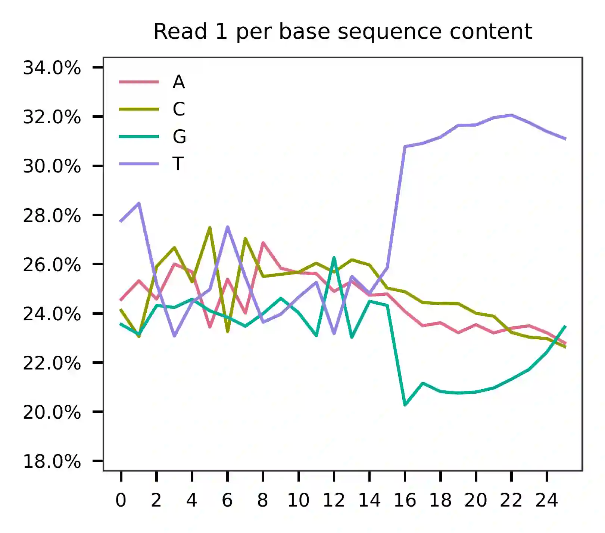
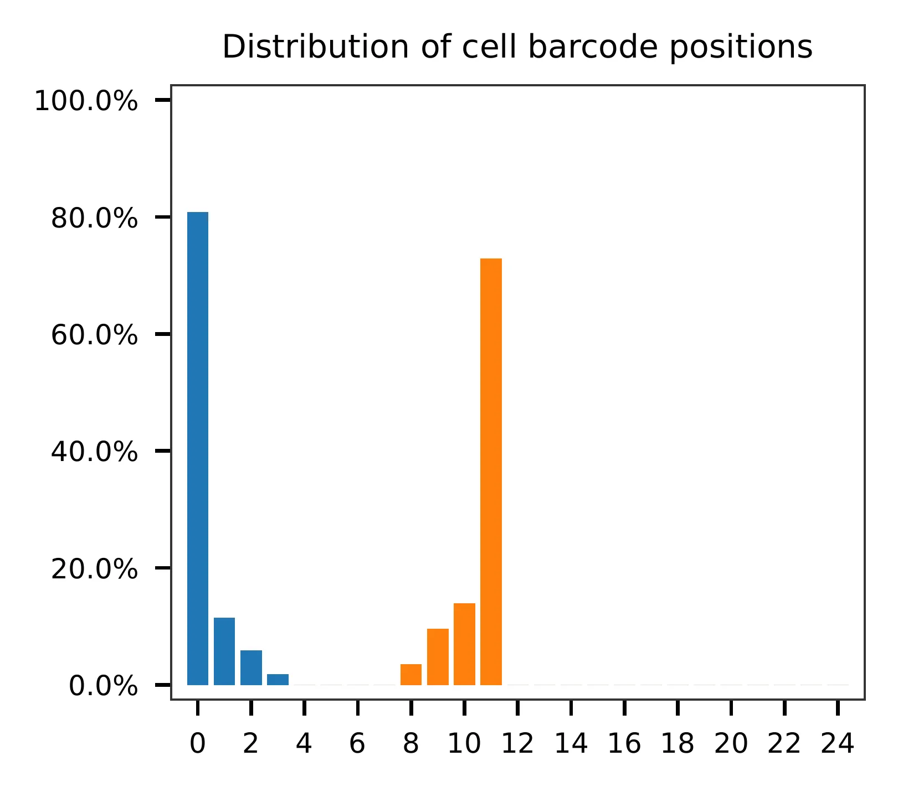
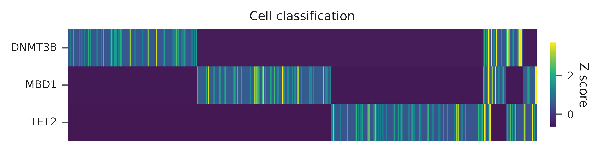
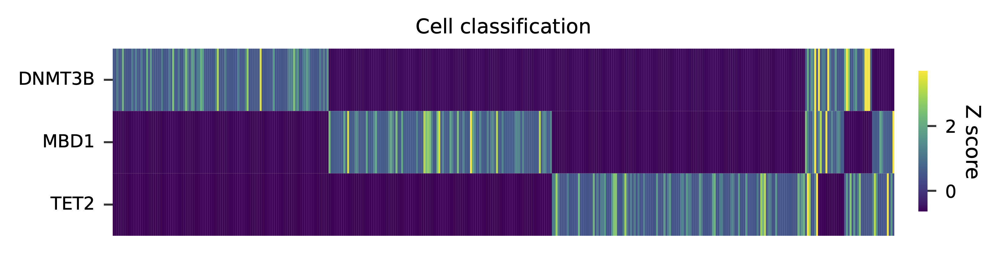
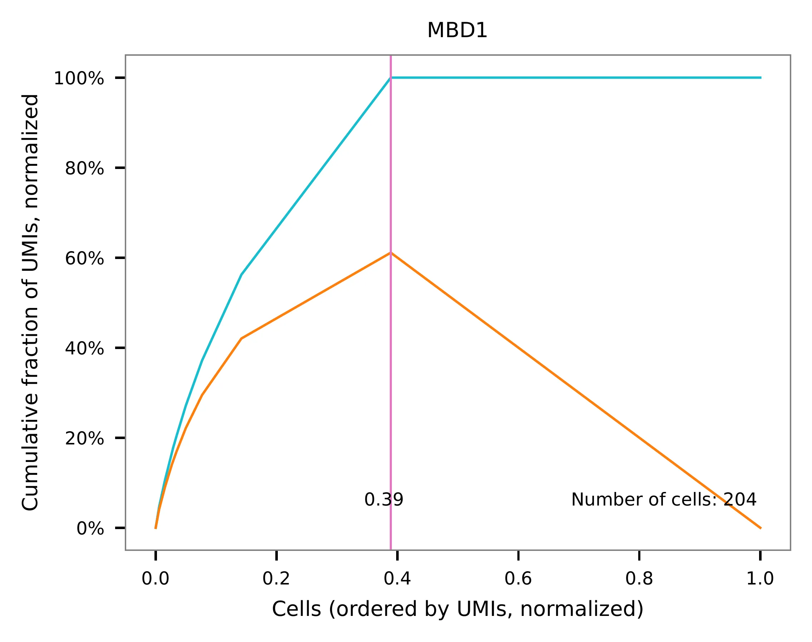
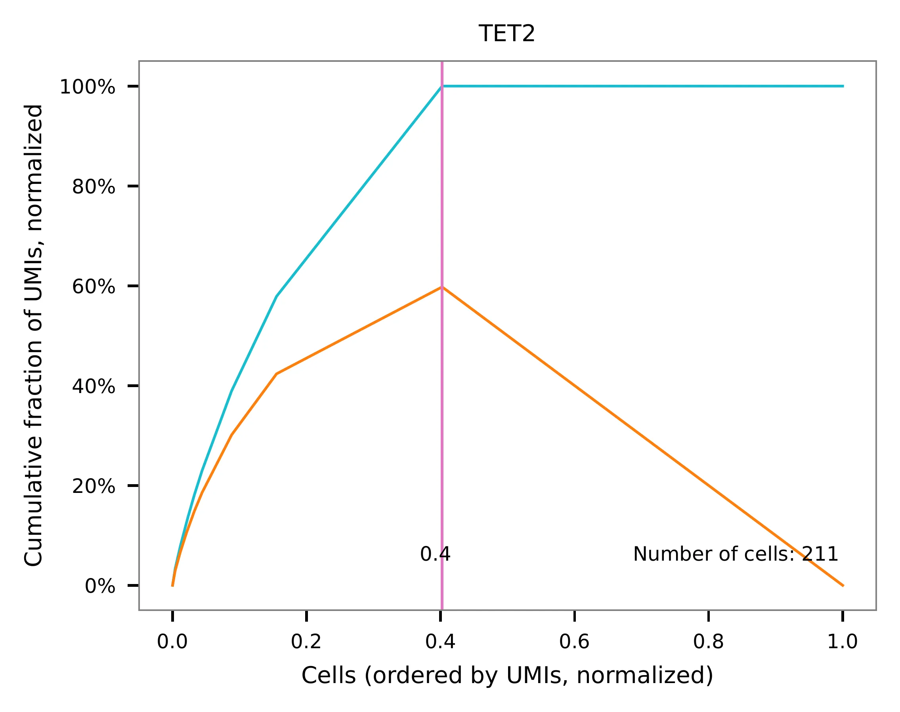
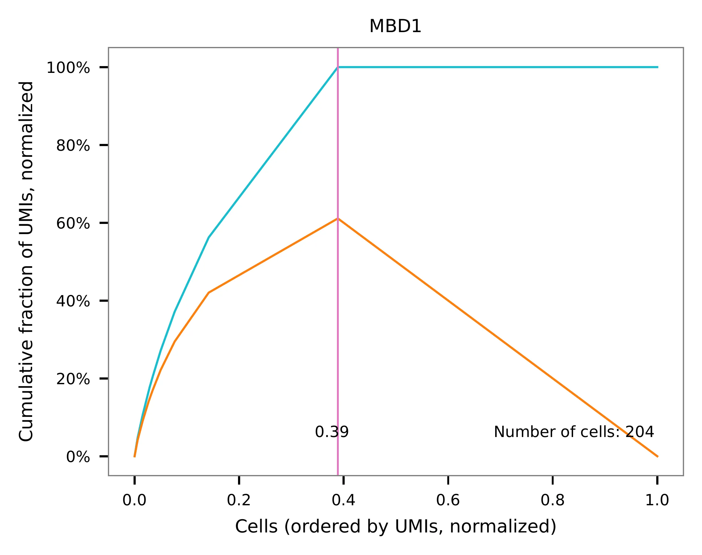
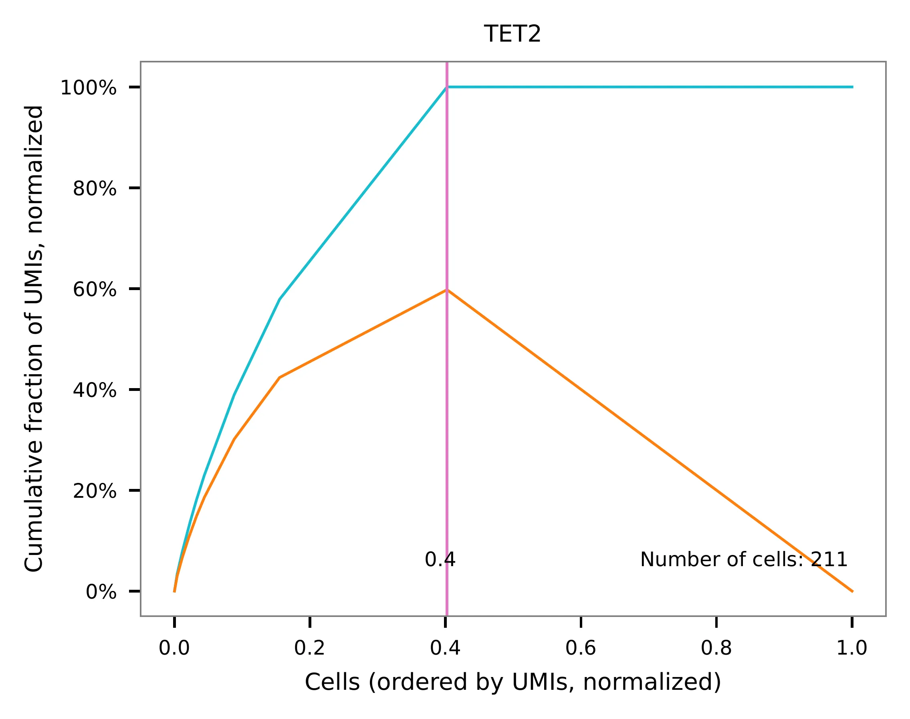

CROP-seq; 1:1:1 Mixture of DNMT3B, MBD1, and TET2 Knockout Cell Lines (HEK293T)¶
Dataset: CROP-seq; 1:1:1 Mixture of DNMT3B, MBD1, and TET2 Knockout Cell Lines (HEK293T)
Datlinger, P., Rendeiro, A.F., Schmidl, C., Krausgruber, T., Traxler, P., Klughammer, J., Schuster, L.C., Kuchler, A., Alpar, D., and Bock, C. (2017). Pooled CRISPR screening with single-cell transcriptome readout. Nat. Methods 14, 297–301.
Preparation¶
Download fastq files from European Nucleotide Archive.
$ curl -O ftp.sra.ebi.ac.uk/vol1/fastq/SRR516/009/SRR5163029/SRR5163029_1.fastq.gz
$ curl -O ftp.sra.ebi.ac.uk/vol1/fastq/SRR516/009/SRR5163029/SRR5163029_2.fastq.gz
Mapping¶
This dataset comprises single cell RNA-seq data obtained from HEK293T cell lines that had been knocked out for DNMT3B, MBD1, and TET2, separately and were mixed in equal proportions (Fig. 1h). The platform used for this dataset is Drop-seq, and more details about the original data processing can be found here. In brief, the raw data was initially processed with Drop-seq Tools v1.12 pipeline. The first 12 bases of read 1 are cell barcodes, followed by 8 bases of UMIs, while captured single cell transcripts are in read 2.
To perform the downstream analysis, I reprocessed the raw reads to obtain cell-associated barcodes. The raw reads were trimmed using Trim Galore! and then mapped to the human reference genome refdata-gex-GRCh38-2020-A using STAR (version 2.7.8a). The plasmid CROPseq-Guide-Puro sequence was not included in the reference.
Number of Read Pairs |
227,621,653 |
Number of Read Pairs, After Trimming |
201,527,916 |
Reads Mapped to Genome: Unique+Multiple |
0.7654 |
Reads Mapped to Genome: Unique |
0.696169 |
Estimated Number of Cells |
1,199 |
Fraction of Reads in Cells |
0.479281 |
Mean Reads per Cell |
45,290 |
Median Reads per Cell |
16,329 |
Mean UMI per Cell |
2,391 |
Median UMI per Cell |
1,118 |
Mean Genes per Cell |
1,042 |
Median Genes per Cell |
716 |
Total Genes Detected |
16,068 |
Inspect cell barcodes.
$ cat cell_barcodes.txt
AACGGGCATGGG
AACTGGGCATGG
AAGACAGCGTGT
AAGGGCGTACTC
AATAAATACAAA
AATAAATACAAC
AATAAATACAAG
AATAAATACAAT
AATCAATCGCAA
AATCAATCGCAC
Prepare feature barcodes. sgRNA sequences can be found in Supplementary Table 1.
$ cat feature_barcodes.tsv
DNMT3B CAGGATTGGGGGCGAGTCGG
MBD1 ATAGGTGTCTGAGCGTCCAC
TET2 CAGGACTCACACGACTATTC
Approach A¶
As sgRNAs are captured together with other transcripts through polyA
tails, their locations on read 2 may vary (it should be noted that this
is not an sgRNA enrichment library). To expedite processing, we first
screened reads that contained the constant sequence (GACGAAACACCG)
upstream of sgRNAs using cutadapt (version 3.7).
$ cutadapt \
--cores 0 \
--front GACGAAACACCG \
--length 25 \
--minimum-length 25:25 \
--trimmed-only \
--output read_2_trimmed.fq.gz --paired-output read_1_trimmed.fq.gz \
../SRR5163029_2.fastq.gz ../SRR5163029_1.fastq.gz
Preview the filtering result: 1,429,437 out of 227,621,653 (0.6%) read pairs are kept for sgRNA identification.
== Read fate breakdown ==
Pairs that were too short: 25,972 (0.0%)
Pairs discarded as untrimmed: 226,166,244 (99.4%)
Pairs written (passing filters): 1,429,437 (0.6%)
QC¶
The first 100,000 read pairs are sampled (default, set by -n) for
quality control. By default, diagnostic results and plots are generated
in the qc directory (set by --output_directory), and the full
length of read 1 and read 2 are searched against reference cell and
feature barcodes, respectively. The per base content of both read pairs
and the distribution of matched barcode positions are summarized. Use
-r1_c and/or -r2_c to limit the search range, and -cb_n
and/or -fb_n to set the mismatch tolerance for cell and/or feature
barcode matching (default 3).
$ fba qc \
-1 read_1_trimmed.fq.gz \
-2 read_2_trimmed.fq.gz \
-w cell_barcodes.txt \
-f feature_barcodes.tsv \
-r1_c 0,12
This library was constructed using the Drop-seq platform, where the first 12 bases correspond to cell barcodes, and the following 8 bases represent UMIs. Based on the base content plot, the GC content of the cell barcodes is evenly distributed. However, the UMIs show a slight T-enrichment.
 {kind=link}
{kind=link}
Regarding read 2, the GC content of sgRNAs is uniformly distributed. It should be noted that the first 20 bases correspond to the sgRNA sequences.
{kind=link}
{kind=link}
The detailed qc results are stored in the
feature_barcoding_output.tsv.gz file. The matching_pos columns
indicate the matched positions on reads, while the
matching_description columns indicate mismatches in the format of
substitutions:insertions:deletions.
$ zcat feature_barcoding_output.tsv.gz | grep -v no_match | head
read1_seq cell_barcode cb_matching_pos cb_matching_description read2_seq feature_barcode fb_matching_pos fb_matching_description
GCTGCATAGTCGggggggatttttt TTCATAGCTCCG 2:12 1:0:2 CAGGACTCACACGACTATTCGTTTT TET2_CAGGACTCACACGACTATTC 0:20 0:0:0
GTTGCTCCTCACggtgatttttttt GTTCCCTCCCAC 0:12 1:1:1 CAGGACTCACACGACTATTCGTTTT TET2_CAGGACTCACACGACTATTC 0:20 0:0:0
TAATGTTTAGGGagggcgctttttt TAATGTTTAGGG 0:12 0:0:0 ATAGGTGTCTGAGCGTCCACGTTTT MBD1_ATAGGTGTCTGAGCGTCCAC 0:20 0:0:0
TCTTCCACTACCggtatgacttttt TCTTCCACTACC 0:12 0:0:0 CAGGATTGGGGGCGAGTCGGGTTTT DNMT3B_CAGGATTGGGGGCGAGTCGG 0:20 0:0:0
GGAATGCCTTGAgtatacttttttt GGAATGCCTTGA 0:12 0:0:0 CAGGACTCACACGACTATTCGTTTT TET2_CAGGACTCACACGACTATTC 0:20 0:0:0
GCGATCACAATGtaatagatttttt GCGATCACAATG 0:12 0:0:0 CAGGATTGGGGGCGAGTCGGGTTTT DNMT3B_CAGGATTGGGGGCGAGTCGG 0:20 0:0:0
CGCCGTCGGACAcgaatcctttttt CCGTAGCGGGCA 2:12 1:0:2 ATAGGTGTCTGAGCGTCCACGTTTT MBD1_ATAGGTGTCTGAGCGTCCAC 0:20 0:0:0
CCGTCCTAGTTGatcccagtttttt CCGTCCTAGTTG 0:12 0:0:0 CAGGACTCACACGACTATTCGTTTT TET2_CAGGACTCACACGACTATTC 0:20 0:0:0
ATTGTTCCATCTgtcggcttttttt ACTGTTTGATCT 0:12 3:0:0 ATAGGTGTCTGAGCGTCCACGTTTT MBD1_ATAGGTGTCTGAGCGTCCAC 0:20 0:0:0
Barcode extraction¶
Search ranges are set to 0,12 on read 1 and 0,20 on read 2. One
mismatch for cell and feature barcodes (-cb_m, -cf_m) are
allowed.
$ fba extract \
-1 read_1_trimmed.fq.gz \
-2 read_2_trimmed.fq.gz \
-w cell_barcodes.txt \
-f feature_barcodes.tsv \
-o feature_barcoding_output.tsv.gz \
-r1_c 0,12 \
-r2_c 0,20 \
-cb_m 1 \
-fb_m 1
Preview of result.
$ gzip -dc feature_barcoding_output.tsv.gz | head
read1_seq cell_barcode cb_num_mismatches read2_seq feature_barcode fb_num_mismatches
TAATGTTTAGGGagggcgctttttt TAATGTTTAGGG 0 ATAGGTGTCTGAGCGTCCACgtttt MBD1_ATAGGTGTCTGAGCGTCCAC 0
TCTTCCACTACCggtatgacttttt TCTTCCACTACC 0 CAGGATTGGGGGCGAGTCGGgtttt DNMT3B_CAGGATTGGGGGCGAGTCGG 0
GGAATGCCTTGAgtatacttttttt GGAATGCCTTGA 0 CAGGACTCACACGACTATTCgtttt TET2_CAGGACTCACACGACTATTC 0
GCGATCACAATGtaatagatttttt GCGATCACAATG 0 CAGGATTGGGGGCGAGTCGGgtttt DNMT3B_CAGGATTGGGGGCGAGTCGG 0
CCGTCCTAGTTGatcccagtttttt CCGTCCTAGTTG 0 CAGGACTCACACGACTATTCgtttt TET2_CAGGACTCACACGACTATTC 0
ATTATATGTGAGcagactttttttt ATTATATGTGAG 0 ATAGGTGTCTGAGCGTCCACgtttt MBD1_ATAGGTGTCTGAGCGTCCAC 0
TTTCAGTATTGGggcgaattttttt TTTCAGTATTGG 0 ATAGGTGTCTGAGCGTCCACgtttt MBD1_ATAGGTGTCTGAGCGTCCAC 0
GTTCCCTCCCAAacatgagtttttt GTTCCCTCCCAA 0 CAGGATTGGGGGCGAGTCGGgtttt DNMT3B_CAGGATTGGGGGCGAGTCGG 0
GCTCCGCTTTTAactcaagtttttt GCTCCGCTTTTA 0 CAGGATTGGGGCCGAGTCGGgactt DNMT3B_CAGGATTGGGGGCGAGTCGG 1
Result summary.
9,213 out of 1,429,437 read pairs have valid cell and feature barcodes.
2022-03-07 16:11:53,295 - fba.__main__ - INFO - fba version: 0.0.x
2022-03-07 16:11:53,295 - fba.__main__ - INFO - Initiating logging ...
2022-03-07 16:11:53,295 - fba.__main__ - INFO - Python version: 3.10
2022-03-07 16:11:53,295 - fba.__main__ - INFO - Using extract subcommand ...
2022-03-07 16:11:53,310 - fba.levenshtein - INFO - Number of reference cell barcodes: 1,199
2022-03-07 16:11:53,310 - fba.levenshtein - INFO - Number of reference feature barcodes: 3
2022-03-07 16:11:53,310 - fba.levenshtein - INFO - Read 1 coordinates to search: [0, 12)
2022-03-07 16:11:53,310 - fba.levenshtein - INFO - Read 2 coordinates to search: [0, 20)
2022-03-07 16:11:53,310 - fba.levenshtein - INFO - Cell barcode maximum number of mismatches: 1
2022-03-07 16:11:53,310 - fba.levenshtein - INFO - Feature barcode maximum number of mismatches: 1
2022-03-07 16:11:53,312 - fba.levenshtein - INFO - Read 1 maximum number of N allowed: 3
2022-03-07 16:11:53,312 - fba.levenshtein - INFO - Read 2 maximum number of N allowed: 3
2022-03-07 16:11:53,337 - fba.levenshtein - INFO - Matching ...
2022-03-07 16:12:13,951 - fba.levenshtein - INFO - Number of read pairs processed: 1,429,437
2022-03-07 16:12:13,952 - fba.levenshtein - INFO - Number of read pairs w/ valid barcodes: 9,213
2022-03-07 16:12:13,954 - fba.__main__ - INFO - Done.
Matrix generation¶
Only fragments with correctly matched cell and feature barcodes are
included, while fragments with UMI lengths less than the specified value
are discarded. UMI removal is performed using UMI-tools (Smith, T., et
al. 2017. Genome Res. 27, 491–499.), with the starting position on
read 1 set by -us (default 16) and the length set by -ul
(default 12). The UMI deduplication method can be set using -ud
(default directional), and the UMI deduplication mismatch threshold
can be specified using -um (default 1).
The generated feature count matrix can be easily imported into well-established single cell analysis packages such as Seurat and Scanpy.
$ fba count \
-i feature_barcoding_output.tsv.gz \
-o matrix_featurecount.csv.gz \
-us 12 \
-ul 8
Result summary.
2022-03-08 13:43:27,499 - fba.__main__ - INFO - fba version: 0.0.x
2022-03-08 13:43:27,499 - fba.__main__ - INFO - Initiating logging ...
2022-03-08 13:43:27,499 - fba.__main__ - INFO - Python version: 3.9
2022-03-08 13:43:27,499 - fba.__main__ - INFO - Using count subcommand ...
2022-03-08 13:43:28,183 - fba.count - INFO - UMI-tools version: 1.1.1
2022-03-08 13:43:28,184 - fba.count - INFO - UMI starting position on read 1: 12
2022-03-08 13:43:28,184 - fba.count - INFO - UMI length: 8
2022-03-08 13:43:28,184 - fba.count - INFO - UMI-tools deduplication threshold: 1
2022-03-08 13:43:28,184 - fba.count - INFO - UMI-tools deduplication method: directional
2022-03-08 13:43:28,184 - fba.count - INFO - Header line: read1_seq cell_barcode cb_num_mismatches read2_seq feature_barcode fb_num_mismatches
2022-03-08 13:43:28,194 - fba.count - INFO - Number of lines processed: 9,213
2022-03-08 13:43:28,194 - fba.count - INFO - Number of cell barcodes detected: 420
2022-03-08 13:43:28,194 - fba.count - INFO - Number of features detected: 3
2022-03-08 13:43:28,194 - fba.count - INFO - UMI deduplicating ...
2022-03-08 13:43:28,202 - fba.count - INFO - Total UMIs after deduplication: 1,089
2022-03-08 13:43:28,202 - fba.count - INFO - Median number of UMIs per cell: 1.0
2022-03-08 13:43:28,204 - fba.__main__ - INFO - Done.
Demultiplexing¶
Gaussian mixture model¶
The implementation of demultiplexing method 2 (set by -dm) is
inspired by the method described on the 10x Genomics’ website. To set
the probability threshold for demultiplexing, use -p (default
0.9). To specify the minimum number of positive cells for a given
feature to be considered during demultiplexing, use -nc (default
200).
$ fba demultiplex \
-i matrix_featurecount.csv.gz \
-dm 2 \
-v \
-nc 0
2022-03-07 19:57:14,925 - fba.__main__ - INFO - fba version: 0.0.x
2022-03-07 19:57:14,925 - fba.__main__ - INFO - Initiating logging ...
2022-03-07 19:57:14,925 - fba.__main__ - INFO - Python version: 3.9
2022-03-07 19:57:14,925 - fba.__main__ - INFO - Using demultiplex subcommand ...
2022-03-07 19:57:17,564 - fba.__main__ - INFO - Skipping arguments: "-q/--quantile", "-cm/--clustering_method"
2022-03-07 19:57:17,564 - fba.demultiplex - INFO - Output directory: demultiplexed_gm
2022-03-07 19:57:17,564 - fba.demultiplex - INFO - Demultiplexing method: 2
2022-03-07 19:57:17,564 - fba.demultiplex - INFO - UMI normalization method: clr
2022-03-07 19:57:17,564 - fba.demultiplex - INFO - Visualization: On
2022-03-07 19:57:17,564 - fba.demultiplex - INFO - Visualization method: tsne
2022-03-07 19:57:17,564 - fba.demultiplex - INFO - Loading feature count matrix: matrix_featurecount.csv.gz ...
2022-03-07 19:57:17,571 - fba.demultiplex - INFO - Number of cells: 420
2022-03-07 19:57:17,571 - fba.demultiplex - INFO - Number of positive cells for a feature to be included: 0
2022-03-07 19:57:17,572 - fba.demultiplex - INFO - Number of features: 3 / 3 (after filtering / original in the matrix)
2022-03-07 19:57:17,572 - fba.demultiplex - INFO - Features: DNMT3B MBD1 TET2
2022-03-07 19:57:17,572 - fba.demultiplex - INFO - Total UMIs: 1,081 / 1,081
2022-03-07 19:57:17,573 - fba.demultiplex - INFO - Median number of UMIs per cell: 1.0 / 1.0
2022-03-07 19:57:17,573 - fba.demultiplex - INFO - Demultiplexing ...
2022-03-07 19:57:18,277 - fba.demultiplex - INFO - Generating heatmap ...
2022-03-07 19:57:18,423 - fba.demultiplex - INFO - Embedding ...
2022-03-07 19:57:21,922 - fba.__main__ - INFO - Done.
Heatmap of the relative abundance of features (sgRNAs) across all cells. Each column represents a single cell.
{kind=link}
Preview the demultiplexing result: the numbers of singlets and multiplets.
In [1]: import pandas as pd
In [2]: m = pd.read_csv("demultiplexed/matrix_cell_identity.csv.gz", index_col=0)
In [3]: m.loc[:, m.sum(axis=0) == 1].sum(axis=1)
Out[3]:
DNMT3B 141
MBD1 150
TET2 158
dtype: int64
In [4]: sum(m.sum(axis=0) > 1)
Out[4]: 74
Knee point¶
Cells are demultiplexed according to the abundance of features,
specifically sgRNAs. Demultiplexing method 5 is implemented to use
the local maxima on the difference curve to detemine the knee point on
the UMI saturation curve.
$ fba demultiplex \
-i matrix_featurecount.csv.gz \
-dm 5 \
-v \
-nc 0
2022-03-05 01:52:38,900 - fba.__main__ - INFO - fba version: 0.0.x
2022-03-05 01:52:38,900 - fba.__main__ - INFO - Initiating logging ...
2022-03-05 01:52:38,900 - fba.__main__ - INFO - Python version: 3.9
2022-03-05 01:52:38,900 - fba.__main__ - INFO - Using demultiplex subcommand ...
2022-03-05 01:52:41,396 - fba.__main__ - INFO - Skipping arguments: "-q/--quantile", "-cm/--clustering_method", "-p/--prob"
2022-03-05 01:52:41,396 - fba.demultiplex - INFO - Output directory: demultiplexed
2022-03-05 01:52:41,396 - fba.demultiplex - INFO - Demultiplexing method: 5
2022-03-05 01:52:41,396 - fba.demultiplex - INFO - UMI normalization method: clr
2022-03-05 01:52:41,396 - fba.demultiplex - INFO - Visualization: On
2022-03-05 01:52:41,396 - fba.demultiplex - INFO - Visualization method: tsne
2022-03-05 01:52:41,396 - fba.demultiplex - INFO - Loading feature count matrix: matrix_featurecount.csv.gz ...
2022-03-05 01:52:41,403 - fba.demultiplex - INFO - Number of cells: 523
2022-03-05 01:52:41,403 - fba.demultiplex - INFO - Number of positive cells for a feature to be included: 0
2022-03-05 01:52:41,404 - fba.demultiplex - INFO - Number of features: 3 / 3 (after filtering / original in the matrix)
2022-03-05 01:52:41,404 - fba.demultiplex - INFO - Features: DNMT3B MBD1 TET2
2022-03-05 01:52:41,404 - fba.demultiplex - INFO - Total UMIs: 1,364 / 1,364
2022-03-05 01:52:41,405 - fba.demultiplex - INFO - Median number of UMIs per cell: 1.0 / 1.0
2022-03-05 01:52:41,405 - fba.demultiplex - INFO - Demultiplexing ...
2022-03-05 01:52:41,810 - fba.demultiplex - INFO - Generating heatmap ...
2022-03-05 01:52:41,979 - fba.demultiplex - INFO - Embedding ...
2022-03-05 01:52:44,840 - fba.__main__ - INFO - Done.
Heatmap of the relative abundance of features (sgRNAs) across all cells. Each column represents a single cell.
{kind=link}
Preview the demultiplexing result: the numbers of singlets and multiplets.
In [1]: import pandas as pd
In [2]: m = pd.read_csv("demultiplexed/matrix_cell_identity.csv.gz", index_col=0)
In [3]: m.loc[:, m.sum(axis=0) == 1].sum(axis=1)
Out[3]:
DNMT3B 141
MBD1 150
TET2 158
dtype: int64
In [4]: sum(m.sum(axis=0) > 1)
Out[4]: 74
Approach B¶
Rather than pre-filtering read 2 for the constant upstream region of sgRNA, we conduct a search for sgRNAs throughout the entire read 2. Although this approach may take longer, it provides more comprehensive results. To optimize speed, we suggest splitting fastq files and running them on different nodes simultaneously.
Barcode extraction¶
The CROPseq-Guide-Puro transcripts captured by Drop-seq beads in
single cell RNA-seq library contain sgRNA sequences. As there are no
secondary libraries for sgRNA enrichment, we need to extract the sgRNA
sequences from read 2. However, the locations of sgRNAs on read 2 vary
because the transcripts are captured by polyA tails. Therefore, we use
the qc mode for sgRNA extraction, which is capable of handling the
variable locations of sgRNAs on read 2.
To specify the number of reads to analyze, use --num_reads, where
None means all reads. To set the number of threads, use -t. By
default, the diagnostic results and plots are generated in the qc
directory (set by --output_directory), and the full length of read 1
and read 2 are searched against reference cell and feature barcodes,
respectively. The per base content of both read pairs and the
distribution of matched barcode positions are summarized. To limit the
search range for read 1 and/or read 2, use -r1_c and/or -r2_c,
respectively. Use -cb_n and/or -fb_n to set the mismatch
tolerance for cell and/or feature barcode matching (default 3).
$ fba qc \
-1 SRR5163029_1.fastq.gz \
-2 SRR5163029_2.fastq.gz \
-w cell_barcodes.txt \
-f feature_barcodes.tsv \
-cb_m 1 \
-fb_m 1 \
-cb_n 15 \
-fb_n 15 \
-r1_c 0,12 \
-t $SLURM_CPUS_ON_NODE \
--num_reads None
The detailed qc results are stored in the
feature_barcoding_output.tsv.gz file. The matching_pos columns
indicate the matched positions on reads, while the
matching_description columns indicate mismatches in the format of
substitutions:insertions:deletions.
$ gzip -dc qc/feature_barcoding_output.tsv.gz | head
read1_seq cell_barcode cb_matching_pos cb_matching_description read2_seq feature_barcode fb_matching_pos fb_matching_description
TTTAGGATCGTTtgatgtattttttttttttttttttttttttttttttttttttttttttttttttttttttttttttttttttttttttttttttttttttttttttcttctttcttttttattctttacaacatcctaccataacata no_match NA NA ATTAAAAATATTGTGGCAGGAAAAAAAAAAAAAAAAAAAAAAAAAAAAAAAAAAAAAAAAAAAAAAAAAAAAAAAAAAAAAAAAAAAAAAAAAAAAAAAAAAAACAAAAAAAAACAAAAAAAAATCAGCTATATAACCACTAATACTTCTA NA NA NA
GTCGAAACTCTTaacgggatttttttttttttttttttttttttttttttttttttttttttttttttttttttttttttttttttttttttttttttttttttttttttttttttttttttttttttttttttttttttttttttttttt no_match NA NA TTATAATGGTTACAAATAAAGCAATAGCATCACAAAAAAAAAAAAAAAAAAAAAAAAAAAAAAAAAAAAAAAAAAAAAAAAAAAAAAAAAAAAAAAAAAAAAAAAAAAAAAAAAAAAAAAAAAAAAAAAAAAAAAAAAAAAAAAAAAAAAA NA NA NA
GTTTACGTGTTCatgggcgattttttttttttttttttttttttttttttaaaaaagttaaaagggggcccgtggggggacaaatagaggggcctagagttccaccccccatcccacaaaaaaaaccctcaccgcacagggcctcgcccct GTTTACGTGTTC 0:12 0:0:0 GGAGTACGGAGAATTCTATAAGAGCTTGACCAATGACTGGGAAGATCACTTGGCAGTGAAGCATTTTTCAGTTGAAGGACAGTTGGAATTCAGAGCCCTTCTATTTGTCCCACGACGTGCTCCTTTTGATCTGTTTGAAAAAAAAAAAAAA no_match NA NA
CCGTCCTAGTTGgtgtatattttttttgtttttttttttttttcaccgggtcagagctgcccctaagtaccacgtcccgtcccacctttatcggacctcggccaccacaaattgcttatccagagtgcccccctccgcccatcccagactc CCGTCCTAGTTG 0:12 0:0:0 AATTAAGTCTCGTAAAGAACGAGAAGCTGAACTTGGACCTAGGGCAACCGACTTCACCAATGTTTACAGCGAGAATCTTGGTGACGACGTGGATGATGAGCGCCTTAAGGTTCTCTTTGGCAAGTTTGGGCCTGCCTTGAGTGTGCGACTT no_match NA NA
TTTCAGTATTGGggcgaattttttttttttttttttttttttttttttttttttttttttttttggctagtttttttgtggtttttgcttttggttctctcgtttgccctggagctcccaggtccctttcttgtcctaccataggtaaccc TTTCAGTATTGG 0:12 0:0:0 GGACGAAACACCGATAGGTGTCTGAGCGTCCACGTTTTAGAGCTAGAAATAGCAAGTTAAAATAAGGCTAGTCCGTTATCAACTTGAAAAAGTGGCACCGAGTCGGTGCTTTTTTAAGCTTGGCGTAACTAGATCTTGAGACACTGCTTTT MBD1_ATAGGTGTCTGAGCGTCCAC 13:33 0:0:0
CTAGGTACCACTagacagtttttttttttttttttttttttttttttttttttttttttttctctatgtgtgcttttttttggctttagtctgtgggtccctagttagccccggcgcccccacgcgcagaacgtgtcttaccacaagaacc CTAGGTACCACT 0:12 0:0:0 TTCTTGGGTAGTTTGCAGTTTTTAAAATTATGTTTTAAAATGGACTATCATATGCTTACCGTAACTTGAAAGTATTTCGATTTCTTGGCTTTATATATCTTGTGGAACGGACGAAACACCGATAGGTGTCTGAGCGTCCACGTTTTAGAGC MBD1_ATAGGTGTCTGAGCGTCCAC 121:1410:0:0
TCTTCCACTACCgtcccgtcttttttttttttttttttttttttttttttttttttttctttatgtcagttttttttgtgctttagtattgggttcccttgtttgcccgagggctcccaggcccagatttgggctaaccaaagggaccccg TCTTCCACTACC 0:12 0:0:0 ACCGATAGGTGTCTGAGCGTCCACGTTTTAGAGCTAGAAATAGCAAGTTAAAATAAGGCTAGTCCGTTATCAACTTGAAAAAGTGGCACCGAGTCGGTGCTTTTTTAAGCTTGGCGTAACTAGATCTTGAGACACTGCTTTTTGCTTGTAC MBD1_ATAGGTGTCTGAGCGTCCAC 4:24 0:0:0
CTTAATTTGGTGggaagattttttttttttttttttttttttttttttaagtactttaagtaagctttttttaggctttagccgtgggttcccctgttagcccgggaggtccccgggcccaatctgggcctaacagagaggccccgtacaa CTTAATTTGGTG 0:12 0:0:0 CCGTAACTTGAAAGTATTTCGATTTCTTGGCTTTATATATCTTGTGGAAAGGACGAAACACCGCAGGACTCACACGACTCTTCGTTTTAGAGCTAGCAATAGCAAGTTAAAATAAGGCTAGTCCGTTATCAACTTGAAAAAGTGGCACCGT TET2_CAGGACTCACACGACTATTC 63:83 1:0:0
TCGTACATACGGtggtttttttttttttttttttttttttttttttttttttttttttttttttttgtttttttttttttttgtttttttttttgtgtcctttgttttcactggggctcccaggtccatatccggtgttaccagagaaacc TCGTACATACGG 0:12 0:0:0 ATCATATGCTTACCGTAACTTGAAAGTATTTCGATTTCTTGGCTTTATATATCTTGTGGAAAGGACGAAACACCGCAGGATTGGGGGCGAGTCGGGTTTTAGAGCTAGAAATAGCAAGTTAAAATAAGGCTAGTCCGTTATCAACTTGAAA DNMT3B_CAGGATTGGGGGCGAGTCGG 75:95 0:0:0
Matrix generation¶
Only fragments with correctly matched cell and feature barcodes are
included, while fragments with UMI lengths less than the specified value
are discarded. UMI removal is performed using UMI-tools (Smith, T., et
al. 2017. Genome Res. 27, 491–499.), with the starting position on
read 1 set by -us (default 16) and the length set by -ul
(default 12). The UMI deduplication method can be set using -ud
(default directional), and the UMI deduplication mismatch threshold
can be specified using -um (default 1).
The generated feature count matrix can be easily imported into well-established single cell analysis packages: Seurat and Scanpy.
$ fba count \
-i feature_barcoding_output.tsv.gz \
-o matrix_featurecount.csv.gz \
-us 12 \
-ul 8
Result summary.
11.76 % (1,364 out of 11,597) of read pairs with valid cell and feature barcodes are unique fragments.
2022-03-04 23:18:27,501 - fba.__main__ - INFO - fba version: 0.0.x
2022-03-04 23:18:27,501 - fba.__main__ - INFO - Initiating logging ...
2022-03-04 23:18:27,501 - fba.__main__ - INFO - Python version: 3.10
2022-03-04 23:18:27,501 - fba.__main__ - INFO - Using count subcommand ...
2022-03-04 23:18:31,494 - fba.count - INFO - UMI-tools version: 1.1.2
2022-03-04 23:18:31,495 - fba.count - INFO - UMI start position on read 1 auto-detected, overriding -us
2022-03-04 23:18:31,495 - fba.count - INFO - UMI length: 8
2022-03-04 23:18:31,496 - fba.count - INFO - UMI-tools deduplication threshold: 1
2022-03-04 23:18:31,496 - fba.count - INFO - UMI-tools deduplication method: directional
2022-03-04 23:18:31,496 - fba.count - INFO - Header line: read1_seq cell_barcode cb_matching_pos cb_matching_description read2_seq feature_barcode fb_matching_pos fb_matching_description
2022-03-04 23:18:31,581 - fba.count - INFO - Number of lines processed: 11,597
2022-03-04 23:18:31,581 - fba.count - INFO - Number of cell barcodes detected: 523
2022-03-04 23:18:31,582 - fba.count - INFO - Number of features detected: 3
2022-03-04 23:18:31,608 - fba.count - INFO - Total UMIs after deduplication: 1,364
2022-03-04 23:18:31,609 - fba.count - INFO - Median number of UMIs per cell: 1.0
2022-03-04 23:18:31,615 - fba.__main__ - INFO - Done.
Demultiplexing¶
Gaussian mixture model¶
The implementation of demultiplexing method 2 (set by -dm) is
inspired by the method described on the 10x Genomics’ website. To set
the probability threshold for demultiplexing, use -p (default
0.9). To specify the minimum number of positive cells for a given
feature to be considered during demultiplexing, use -nc (default
200).
$ fba demultiplex \
-i matrix_featurecount.csv.gz \
-dm 2 \
-v \
-nc 0
2022-03-04 23:19:05,218 - fba.__main__ - INFO - fba version: 0.0.x
2022-03-04 23:19:05,219 - fba.__main__ - INFO - Initiating logging ...
2022-03-04 23:19:05,219 - fba.__main__ - INFO - Python version: 3.10
2022-03-04 23:19:05,219 - fba.__main__ - INFO - Using demultiplex subcommand ...
2022-03-04 23:19:15,199 - fba.__main__ - INFO - Skipping arguments: "-q/--quantile", "-cm/--clustering_method"
2022-03-04 23:19:15,200 - fba.demultiplex - INFO - Output directory: demultiplexed
2022-03-04 23:19:15,201 - fba.demultiplex - INFO - Demultiplexing method: 2
2022-03-04 23:19:15,201 - fba.demultiplex - INFO - UMI normalization method: clr
2022-03-04 23:19:15,201 - fba.demultiplex - INFO - Visualization: On
2022-03-04 23:19:15,201 - fba.demultiplex - INFO - Visualization method: tsne
2022-03-04 23:19:15,201 - fba.demultiplex - INFO - Loading feature count matrix: matrix_featurecount.csv.gz ...
2022-03-04 23:19:15,219 - fba.demultiplex - INFO - Number of cells: 523
2022-03-04 23:19:15,219 - fba.demultiplex - INFO - Number of positive cells for a feature to be included: 0
2022-03-04 23:19:15,222 - fba.demultiplex - INFO - Number of features: 3 / 3 (after filtering / original in the matrix)
2022-03-04 23:19:15,222 - fba.demultiplex - INFO - Features: DNMT3B MBD1 TET2
2022-03-04 23:19:15,222 - fba.demultiplex - INFO - Total UMIs: 1,364 / 1,364
2022-03-04 23:19:15,223 - fba.demultiplex - INFO - Median number of UMIs per cell: 1.0 / 1.0
2022-03-04 23:19:15,223 - fba.demultiplex - INFO - Demultiplexing ...
2022-03-04 23:19:17,319 - fba.demultiplex - INFO - Generating heatmap ...
2022-03-04 23:19:17,784 - fba.demultiplex - INFO - Embedding ...
2022-03-04 23:19:32,256 - fba.__main__ - INFO - Done.
Heatmap of the relative abundance of features (sgRNAs) across all cells. Each column represents a single cell.
{kind=link}
Preview the demultiplexing result: the numbers of singlets and multiplets.
In [1]: import pandas as pd
In [2]: m = pd.read_csv("demultiplexed/matrix_cell_identity.csv.gz", index_col=0)
In [3]: m.loc[:, m.sum(axis=0) == 1].sum(axis=1)
Out[3]:
DNMT3B 141
MBD1 150
TET2 158
dtype: int64
In [4]: sum(m.sum(axis=0) > 1)
Out[4]: 74
Knee point¶
Cells are demultiplexed according to the abundance of features,
specifically sgRNAs. Demultiplexing method 5 is implemented to use
the local maxima on the difference curve to detemine the knee point on
the UMI saturation curve.
$ fba demultiplex \
-i matrix_featurecount.csv.gz \
-dm 5 \
-v \
-nc 0
2022-03-05 01:52:38,900 - fba.__main__ - INFO - fba version: 0.0.x
2022-03-05 01:52:38,900 - fba.__main__ - INFO - Initiating logging ...
2022-03-05 01:52:38,900 - fba.__main__ - INFO - Python version: 3.9
2022-03-05 01:52:38,900 - fba.__main__ - INFO - Using demultiplex subcommand ...
2022-03-05 01:52:41,396 - fba.__main__ - INFO - Skipping arguments: "-q/--quantile", "-cm/--clustering_method", "-p/--prob"
2022-03-05 01:52:41,396 - fba.demultiplex - INFO - Output directory: demultiplexed
2022-03-05 01:52:41,396 - fba.demultiplex - INFO - Demultiplexing method: 5
2022-03-05 01:52:41,396 - fba.demultiplex - INFO - UMI normalization method: clr
2022-03-05 01:52:41,396 - fba.demultiplex - INFO - Visualization: On
2022-03-05 01:52:41,396 - fba.demultiplex - INFO - Visualization method: tsne
2022-03-05 01:52:41,396 - fba.demultiplex - INFO - Loading feature count matrix: matrix_featurecount.csv.gz ...
2022-03-05 01:52:41,403 - fba.demultiplex - INFO - Number of cells: 523
2022-03-05 01:52:41,403 - fba.demultiplex - INFO - Number of positive cells for a feature to be included: 0
2022-03-05 01:52:41,404 - fba.demultiplex - INFO - Number of features: 3 / 3 (after filtering / original in the matrix)
2022-03-05 01:52:41,404 - fba.demultiplex - INFO - Features: DNMT3B MBD1 TET2
2022-03-05 01:52:41,404 - fba.demultiplex - INFO - Total UMIs: 1,364 / 1,364
2022-03-05 01:52:41,405 - fba.demultiplex - INFO - Median number of UMIs per cell: 1.0 / 1.0
2022-03-05 01:52:41,405 - fba.demultiplex - INFO - Demultiplexing ...
2022-03-05 01:52:41,810 - fba.demultiplex - INFO - Generating heatmap ...
2022-03-05 01:52:41,979 - fba.demultiplex - INFO - Embedding ...
2022-03-05 01:52:44,840 - fba.__main__ - INFO - Done.
Heatmap of the relative abundance of features (sgRNAs) across all cells. Each column represents a single cell.
{kind=link}
Preview the demultiplexing result: the numbers of singlets and multiplets.
In [1]: import pandas as pd
In [2]: m = pd.read_csv("demultiplexed/matrix_cell_identity.csv.gz", index_col=0)
In [3]: m.loc[:, m.sum(axis=0) == 1].sum(axis=1)
Out[3]:
DNMT3B 141
MBD1 150
TET2 158
dtype: int64
In [4]: sum(m.sum(axis=0) > 1)
Out[4]: 74
UMI distribution and knee point detection:
 



{kind=link}
{kind=link}